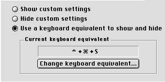
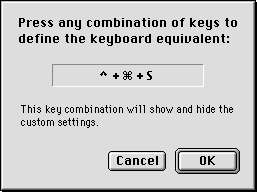
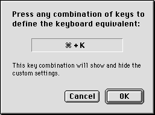
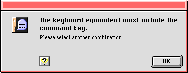

Keyboard Equivalent Support
You should provide keyboard equivalents (shortcut keys) for frequently used controls. If a dialog control does not normally support a keyboard equivalent (for example, pushbuttons or radio buttons) you can duplicate the control as a menu command. For example, a control panel that has an Edit Connection button could also have a Connection command (say, Command-E) in the Edit menu. However, control panel menu commands should be used in addition to--not instead of--dialog controls.To help users avoid or eliminate conflicts, keyboard equivalents may be user definable. You should maintain the following interaction sequence for defining keyboard equivalents whenever possible:
Display the current keyboard equivalent and a button for redefining it. Figure 6-8 shows an example.
Figure 6-8 The current keyboard equivalent and a button for redefining it

Clicking the button opens a dialog with instructions and feedback for changing the keyboard equivalent. Figure 6-9 gives an example.
Figure 6-9 Changing the keyboard equivalent

As soon as the user finishes typing a new key combination, the feedback text field displays the new combination as shown in Figure 6-10.
Figure 6-10 Displaying the new keyboard equivalent combination

If the new key combination is invalid, the feedback text field remains unchanged and an appropriate alert appears. Alerts should indicate the following cases:
Figure 6-11 An alert for an invalid keyboard equivalent combination
- The keyboard equivalent selected did not contain a command key or a function key.
- The keyboard equivalent selected is already in use by another item. The alert should indicate which item is using the shortcut.

See the "Menus" chapter of Macintosh Human Interface Guidelines for additional guidelines and a list of reserved keyboard equivalents.